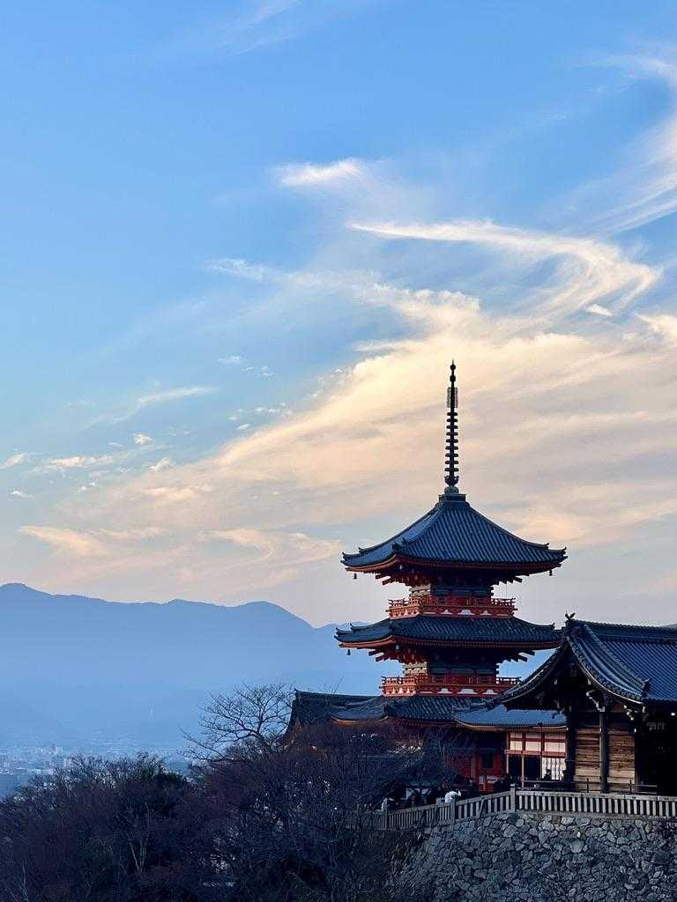
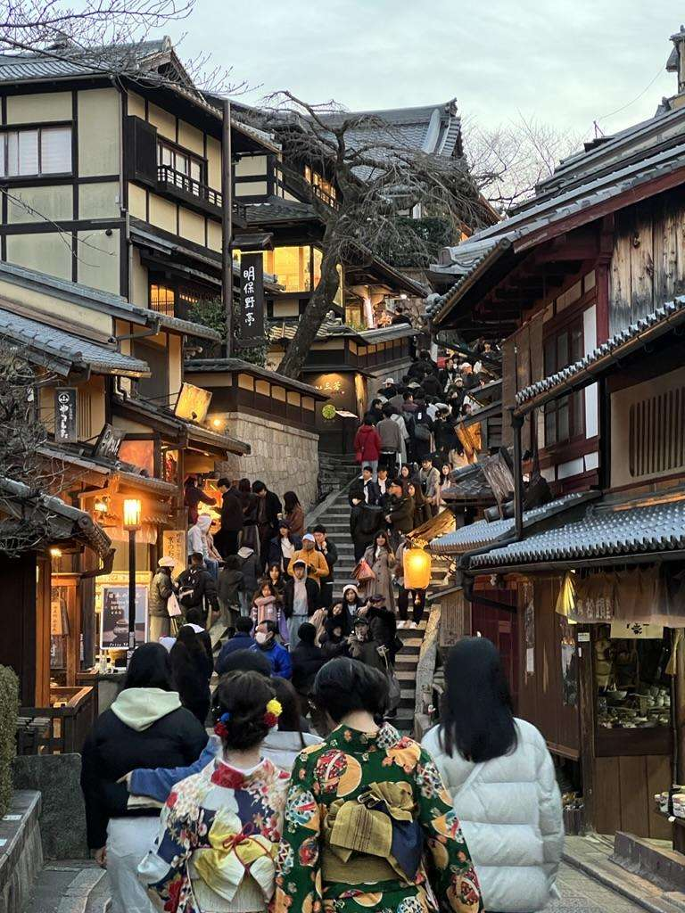
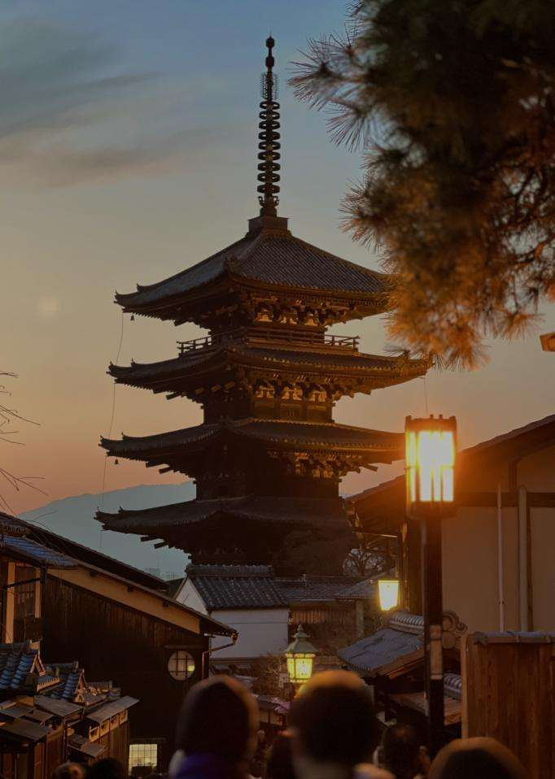
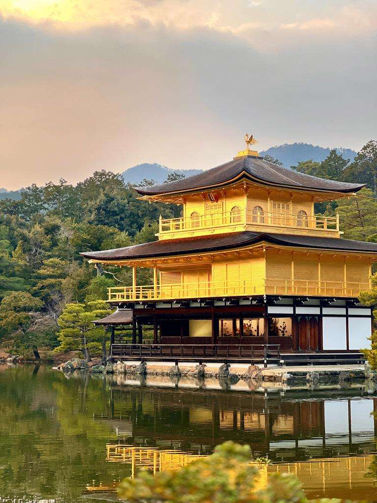
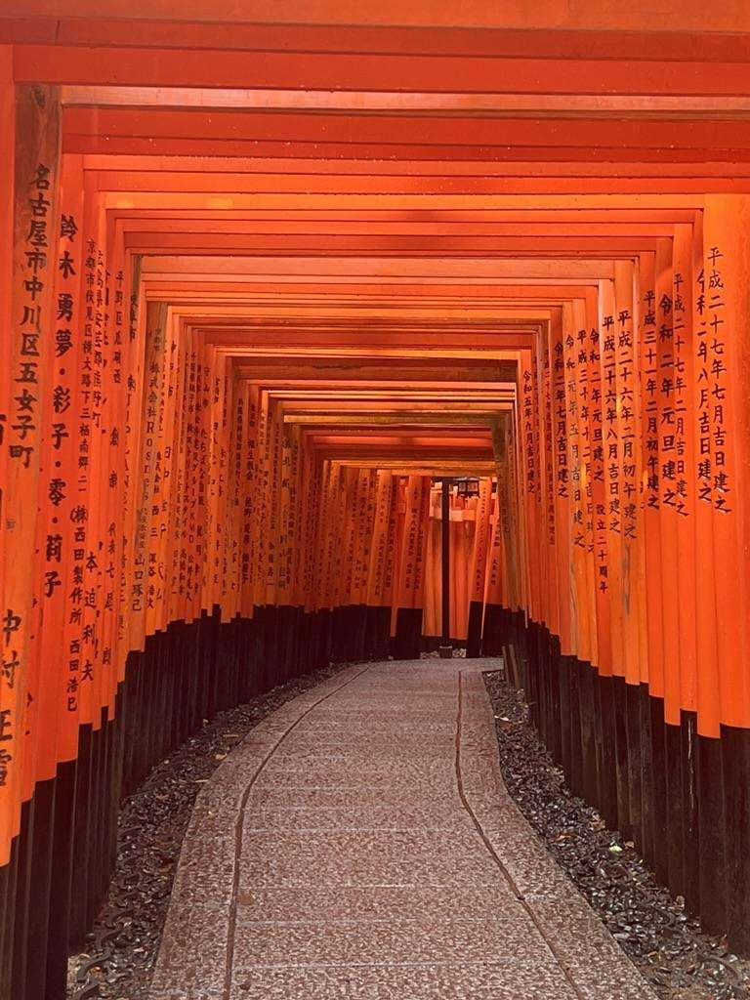

Kyoto is a city where the past is not just preserved but cherished, offering a unique window into Japan's storied history. Known for its magnificent temples, timeless streets, and sacred shrines, Kyoto captivates with a blend of cultural richness and peaceful ambiance. Join me as we explore some of the city's most iconic landmarks and experiences that weave together a tapestry of tradition, beauty, and unforgettable moments.
1 / 5

Kiyomizu-dera Temple: This famous wooden temple is a UNESCO World Heritage site that sits on a hillside, offering amazing views of the city and showing Kyoto’s historic beauty.

Ninenzaka and Sannenzaka: These old streets are full of cute shops and historic buildings, giving a glimpse into Kyoto’s traditional culture and inviting visitors to step into the past.

Hokan-ji Temple: Also known as the Yasaka Pagoda, this five-story pagoda stands gracefully in Kyoto's historic Higashiyama district. It is a reminder of the city's deep-rooted traditions and architectural beauty.

Kinkaku-ji Temple: Also called the Golden Pavilion, this beautiful building is covered in gold leaf and surrounded by a peaceful pond, showing elegance and tranquility.

Fushimi Inari Shrine: Known for its long path of bright red torii gates, this shrine is a strong symbol of faith and devotion in Kyoto.